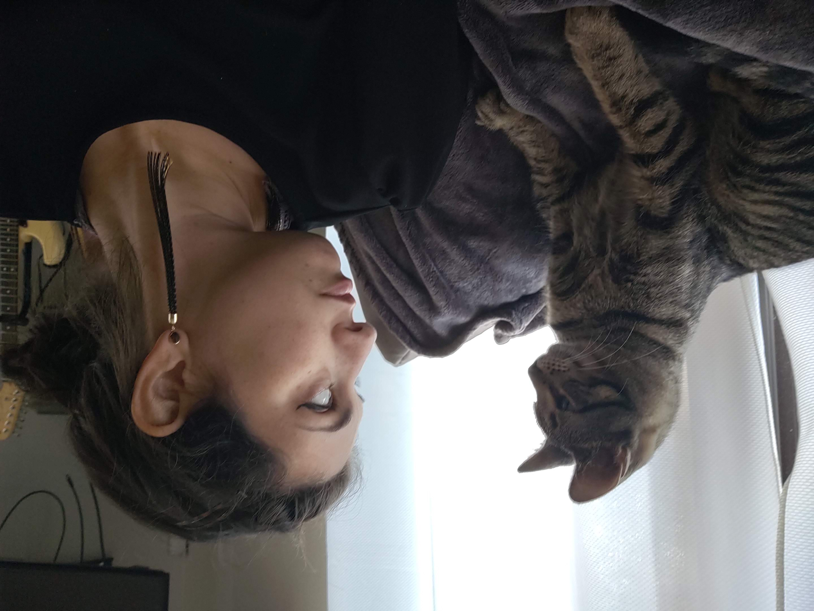

My research broadly concerns victim agency and starts from the assumption that victims can be both morally damaged yet retain moral agency. From there, it carves out normative space for ethical action guidance specifically for victims. I combine approaches from feminist philosophy, social philosophy, existentialism, moral psychology, non-ideal ethics, and philosophy of psychiatry to address these issues. This combination of methods allows for both a macroscopic view of structures of oppression (especially heteropatriarchy, white supremacy, and ableism) while also attending to the impacts of these systems on individual and interpersonal experiences. Ultimately, I use both individual and systemic levels of analysis in order to respond to the ethical dimension of victimization. It is precisely because these oppressive systems can burden moral agency in a world where ethical choices must still be made that an ethical analysis is appropriate for victims. Such an analysis respects the moral agency that is so often denied to victims while also recognizing the impacts of the damages they have wrongly suffered.
Previously, I was a 2018-2019 Resident Ethics Fellow in the Stockdale Center for Ethics at the U.S. Naval Academy and a 2017-2018 Dissertation Fellow at the Humanities Institute at the University of Connecticut, where I completed my dissertation, “Suffering and Self-Sabotage in Ethical Life.”
About Me
My research broadly concerns victim agency and starts from the assumption that victims can be both morally damaged yet retain moral agency. From there, it carves out normative space for ethical action guidance specifically for victims. I combine approaches from feminist philosophy, social philosophy, existentialism, moral psychology, non-ideal ethics, and philosophy of psychiatry to address these issues. This combination of methods allows for both a macroscopic view of structures of oppression (especially heteropatriarchy, white supremacy, and ableism) while also attending to the impacts of these systems on individual and interpersonal experiences. Ultimately, I use both individual and systemic levels of analysis in order to respond to the ethical dimension of victimization. It is precisely because these oppressive systems can burden moral agency in a world where ethical choices must still be made that an ethical analysis is appropriate for victims. Such an analysis respects the moral agency that is so often denied to victims while also recognizing the impacts of the damages they have wrongly suffered.
Previously, I was a 2018-2019 Resident Ethics Fellow in the Stockdale Center for Ethics at the U.S. Naval Academy and a 2017-2018 Dissertation Fellow at the Humanities Institute at the University of Connecticut, where I completed my dissertation, “Suffering and Self-Sabotage in Ethical Life.”